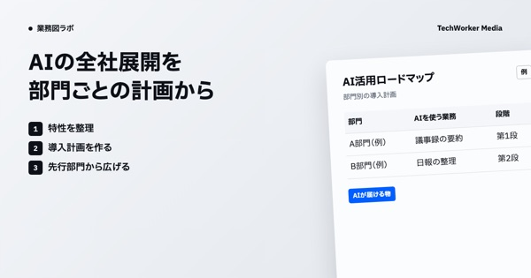

部門ごとのAI導入計画を、全社展開の道筋に
建設企業 複数部門｜業務の特性を部門ごとに見て、AIの導入計画を作り段階的に展開
経営層が掲げるAI活用を、部門ごとの導入計画に落としています。部門別のロードマップを作り、先に進めた部門のやり方を他の部門へ広げ、全社へ段階的に展開中です。
部門ごとの業務各部門の業務とその特性
例| 部門 | 主な業務 | 業務の特性 |
|---|---|---|
| A部門（例） | 図面の確認 | 書類が多い |
| B部門（例） | 現場の日報 | 外出が多い |
AIの処理部門別のAI導入設計
- 1特性を整理
部門ごとに、業務の違いを洗い出します
- 2導入計画を作る
部門別に、AIを使う業務と順番を決めます
- 3先行部門から広げる
先に進めた部門の型を、次の部門へ渡します
AI活用ロードマップ部門別の導入計画
例| 部門 | AIを使う業務 | 段階 |
|---|---|---|
| A部門（例） | 議事録の要約 | 第1段 |
| B部門（例） | 日報の整理 | 第2段 |
- 人が決めること
- どの部門から進めるかと、計画の採用は会社が決めます
- AIがしないこと
- 全部門へ一度に同じ形で広げることはしません
画面の中身は例です（実際の社名・内容ではありません）
課題
- 経営層はAI活用を掲げるものの、展開の道筋が見えません
- 部門によって業務の性質が大きく違います
改善結果
進み方
- 部門別のAI活用ロードマップを策定
- 先行部門の取り組みを横展開する仕組みを構築
- 全社規模でのAI活用体制を段階的に実現中
背景
経営層はAI活用を掲げていました。ところが部門ごとに業務の特性が大きく異なり、全社で統一して展開する道筋が見えない状態でした。複数部門にまたがるAI導入の設計を伴走で進めています。業務の特性を踏まえた導入計画を部門ごとに作り、段階的に全社へ広げています。

業務図ラボの記事AIの全社展開を部門ごとに計画する｜特性の整理から横展開までの業務図→出典：当社の導入事例（techworker.co.jp/cases）／注：画面の中身は例。パートナー企業との協業
ほかの事例
事例の一覧へ →化学メーカー｜研究開発お客さんと作ったAIの仕組み
新素材の用途探しを、1時間で発散から収束まで
研究者の経験と勘に頼っていた新素材の用途探しを、生成AIの手法にしました。AIが用途の案を広げ、3つの観点で定量評価し、絞り込みまで1時間で進みます。
1時間アイデアの発散から収束まで完了金融機関｜全社お客さんと作ったAIの仕組み40名が業務を仕分け、AIエージェントを自作
事務・審査・企画など20超の部署の受講者40名が、自分の業務をタスクに分けてAIに任せる作業を選び、AIエージェントを作って試しました。
137件エージェント化「可能」と判定したタスク（判定213件中）製薬企業｜マーケティングお客さんと作ったAIの仕組み市場リサーチを、外注から社内で回す形へ
外部コンサルに任せていた疾患・薬剤の市場リサーチを、社員が自分で回せるようにしました。Deep Researchを使う対面研修、指示文の作成代行、伴走支援を組み合わせました。
数百万円／年外部コンサル委託費を削減